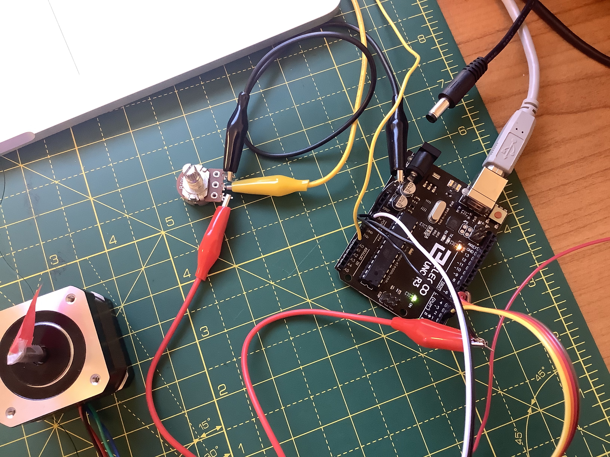

This week i was particularly interested in doing tests with a stepper motor, which i hadn't really used before.
I apologize the wiring isn't clearer in these pictures but the lack of access to more wires of different colors and the even more DIY approach needed made it harder to document. Hopefully you can kind of see things here:

And this is a picture with the H-bridge visible:
I'm using the NEMA 17 bipolar stepper motor hooked up to an Arduino UNO through our H-bridge. The motor, as far as i can tell, has two pairs of leads with the wire colors 1) black/teal and 2) red/blue; coil resistance is 30 Ohms.
The potentiometer (10k Ohms) requires 5V, while the stepper motor needs a little more. I have them both sharing ground from the Arduino, but the potentiometer is connected to the 5V output pin while the stepper is plugged into the VIN output pin using an external power source.
Digital pins 2 through 5 go to the motor through the H-bridge.
I wanted to be able to control the stepper using a potentiometer, which i did by slightly modifying this code i found from a library called AccelStepper.
Here is the Arduino code (after installing the library and including the "AccelStepper" header file at the beginning):
// Define a stepper and the pins it will use
AccelStepper stepper; // Defaults to AccelStepper::FULL4WIRE (4 pins) on 2, 3, 4, 5
// This defines the analog input pin for reading the control voltage
// Tested with a 10k linear pot between 5v and GND
#define ANALOG_IN A0
void setup()
{
stepper.setMaxSpeed(1000);
}
void loop()
{
// Read new position
int analog_in = analogRead(ANALOG_IN);
stepper.moveTo(analog_in);
stepper.setSpeed(500);
stepper.runSpeedToPosition();
}
Here is a brief demonstration of the thing: